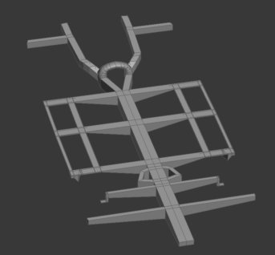
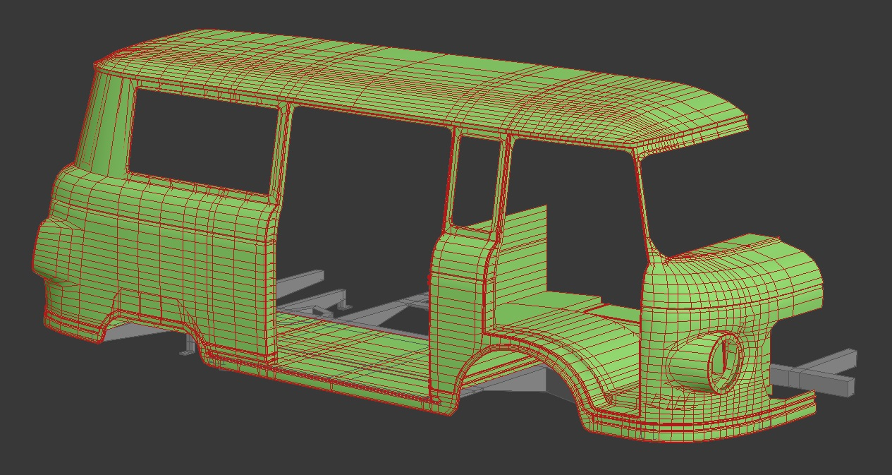
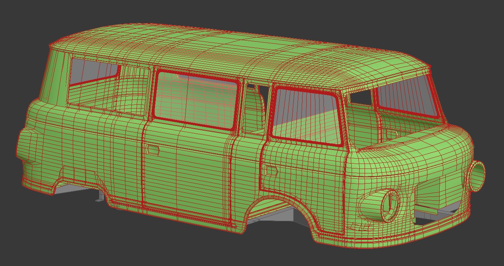
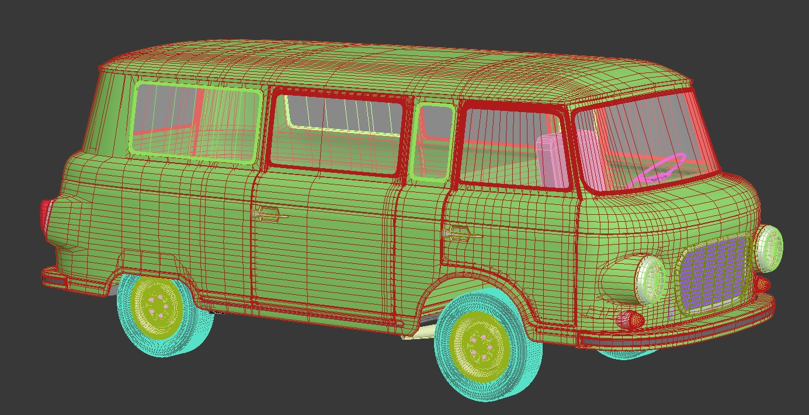
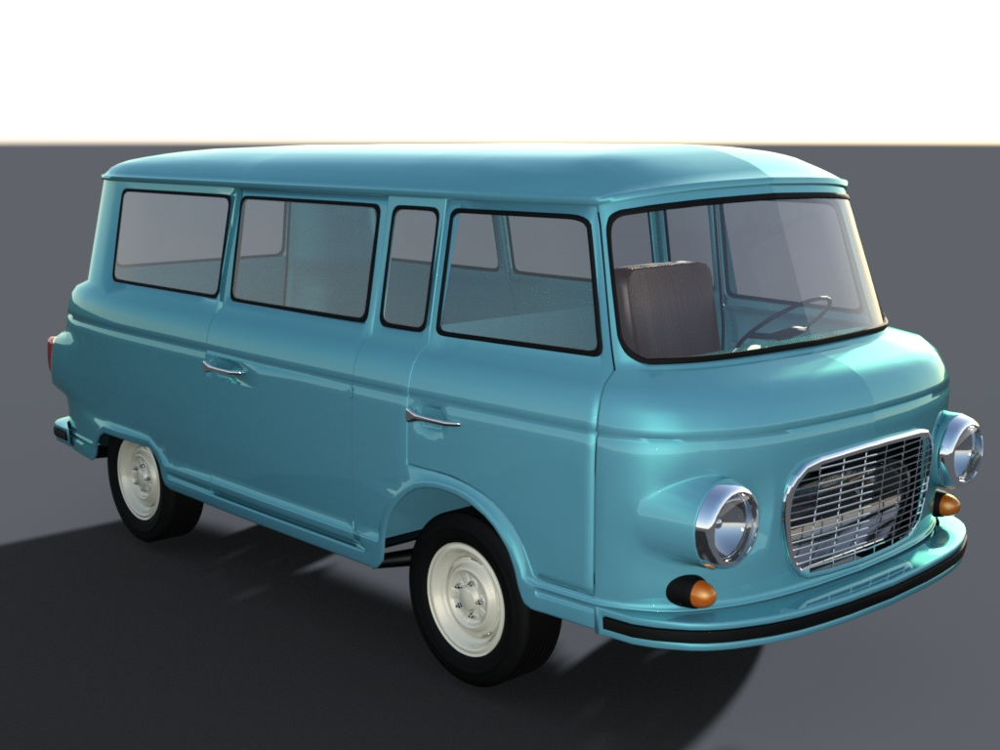
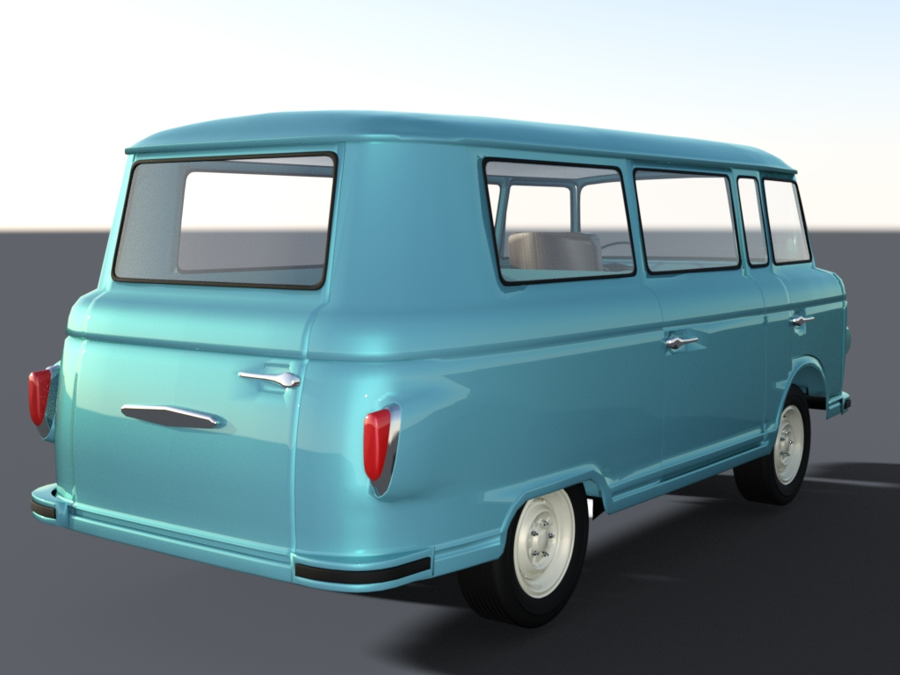

Barkas B1000
Этот весьма редкий автомобиль производства ГДР повстречался мне на московских
улицах. Решено было сделать его трёхмерную модель для использования в играх и
рендеринга статических изображений. Для работы потребуется программа для
3d-моделирования (например Blender),
как можно большее количество фотографий автомобиля и пространственное воображение.
Рама
Автомобиль имел хребтовую раму, на которую монтировались все остальные элементы,
поэтому начать логичнее всего было с неё. Для этого было найдено фото автомобиля со стороны
днища.
 Рама имеет элементы для крепления деталей подвески
и кузова, их нужно расположить в соответствии с габаритными размерами автомобиля. Чтобы не
исправлять неточности в дальнейшем, были произведены расчёты примерных размеров элементов рамы
относительно габаритов кузова. В передней части располагается двигатель с коробкой передач. Для них созданы отдельные
точки крепления.
Рама создавалась из обычного примитива типа box и не задумывалась как элемент с высокой
детализацией. Как правило, в играх автомобиль большую часть времени находится в своём обычном
положении и нижняя его сторона скрыта от взгляда игрока. Рама сделана для правильного
размещения пола кузова, колёс и элементов подвески. Несмотря на низкую детализацию, рама будет
играть важную роль в физике автомобиля. Она будет участвовать в развесовке, расположении центра
тяжести и описании модели деформации.
Кузов
Кузов также создан из примитива box. Для
упрощения контроля геометрии и исключения лишних действий, работа велась только над правой стороной кузова.
Сформированы контуры окон, дверей, колёсные арки. Двери и окна впоследствии отделены от кузова
как самостоятельные элементы.
По фотографиям были подобраны пропорции кузова и сделан рельеф наружных панелей. В проёмах
окон и дверей оставлены рамки для создания уплотнителей. Затем, по высоте рамы сделана плоскость пола.
Посадочные места под светотехнику выполнены сквозными, так как у оригинального автомобиля доступ для
обслуживания фар и фонарей сделан прямо из салона. Эти элементы будут соответствовать конструкции
оригинала.
В передней части салона между сиденьями располагается высокий тоннель с люком для
доступа к двигателю и КПП. Эти детали также влияют на жёсткость кузова и физику в играх.
Люк планируется сделать отдельным элементом, который можно будет открыть, а также сделать
анимацию, например, для его поведения при столкновениях.
Теперь настало время проверить общую геометрию кузова и примерить другие элементы.
Двери и окна
Для правильного и симметричного расположения дверей и окон, эти детали были выделены
в отдельные объекты и отражены зеркально по продольной оси автомобиля.  Для контроля общей геометрии кузова было сделано также зеркальное отображение
правой половины. Единственная боковая дверь для доступа в пассажирский отсек была отражена и вновь
прикреплена к кузову как неотделимая боковая панель.
Сформированы внутренние части проёмов и уплотнители дверей и окон, а также зазоры между
дверями и кузовом. На этом этапе начата работа по созданию дверных карт и передней панели.
Для возможности создания не только пассажирской версии, но также и цельнометаллического фургона,
сохранена сетка полигонов возле оконных проёмов, а также сделана перегородка между передей частью
и пассажирским салоном.
Для создания бамперов, светотехники и решётки радиатора потребовалось скопировать полигоны,
непосредственно касающиеся контуров этих деталей. Важно контролировать тот момент, чтобы полигоны
соприкасались между собой только рёбрами или вершинами, но ни в коем случае не пересекались.
Это необходимо для того, чтобы при отрисовке текстурных карт в местах соприкосновения не было ряби
и артефактов, а также багов с физикой деформации.
Колёса, бамперы, оптика
Колёса у этого автомобиля похожи на таковые от машин Горьковского автозавода, поэтому
я взял готовые колёса от модели ГАЗ-21. Потребовалась лишь небольшая доработка и создание модели
покрышки и крепёжных болтов.  Модели светотехники
создавались как группа объектов для упрощения наложения текстур.
Для работы с решёткой радиатора потребовалась фотография передней части строго по
продольной оси. Для того, чтобы соблюсти её пропорции и расположение относительно
других элементов, пришлось создать плоскость и наложить на неё эту фотографию, а уже по ней
делать саму решётку. За решёткой расположен сам радиатор. Он представляет собой примитив box
с наложенной на него ячеистой текстурой. Делать модель с высокой детализацией нет никакого смысла, так как
эта деталь скрыта за решёткой и нужна, по большому счёту, только для заполнения пустоты и
номинального физического присутствия.
Руль и сиденье, на данный момент, не прорабатывались в деталях и присутствуют в салоне
для понимания общей компоновки и приведения геометрии передних арок к правильным размерам.
Впереди предстоит работа над приборной панелью, органами управления, внутренней отделкой и
пассажирским отделением. Также предстоит создать модели двигателя, коробки передач и элементов
ходовой части.
При визуализации обнаружились мелкие недостатки на кузове. Это вызвано незаметными, на
первый взгляд, отклонениями вершин от плоскостей. Эти недостатки будут устраняться в ходе работ
над картами текстур.
В настоящий момент
Следующие два изображения показывают, как выглядит автомобиль на данной стадии.
По мере продвижения, эта статья будет дополняться.
